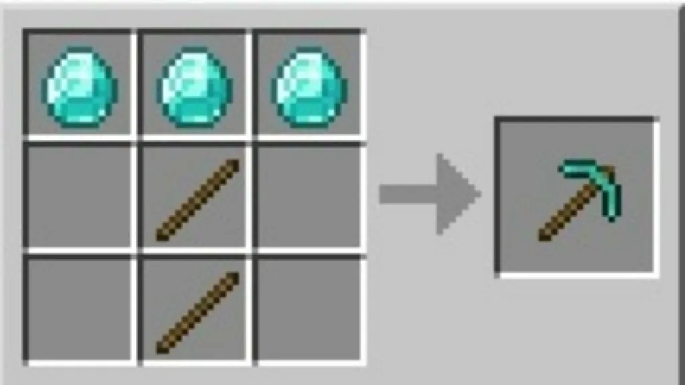
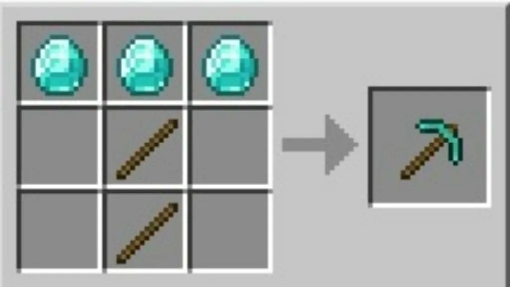

The Diamond Pickaxe, a staple tool in every minecraft world. This tool is important for new players as obsidian can't be mined without it. It used to be the best tool in the game until netherite came along which is a whole other subject. The diamond pickaxe has one of the highest durabilites in the game, meaning it can mine a crap ton of blocks. To craft it, you require two sticks and 3 diamonds. Realistically this pickaxe would probably be too expensive and break on impact, but it's a game so who cares.
 
